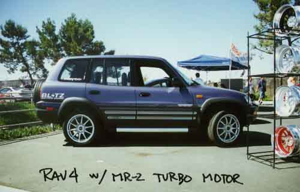

front view | side view
Performance Upgrade
HKS Exhaust System*
Greddy Exhaust System*
Toysport Air Filter Kit
K&N; Air Filter
*will fit 2 & 4 door without a rear bumper.
Drivetrain
Centerforce Clutch Dual Friction
TRD Clutch with Kevlar Disc
TRD Short Shift Kit ('96 only)
Brake Component
Cross Drilled Rotors
TRD Waydo^ Front Brake Pads
Suspension
TRD Waydo Springs, 1.5" drop
TRD USA Springs
H&R; Springs, 1.75" drop
TRD Waydo Shocks, non-adjustable, set
TRD Waydo Shocks, 5-way Adjustable, set
TRD USA Shocks, non-adjustable, set
Tokico Shocks
TRD Waydo Front Sway Bar
Cusco Front Strut Tower Bar, AS type**
Cusco Front Strut Tower Bar, OS type**
TRD Waydo is a Japanese name for TRD 4wd parts. All Waydo parts are special order items only.
** Cusco products are special order items only.
For any inquiries, please call 213-755-1177 or email us.